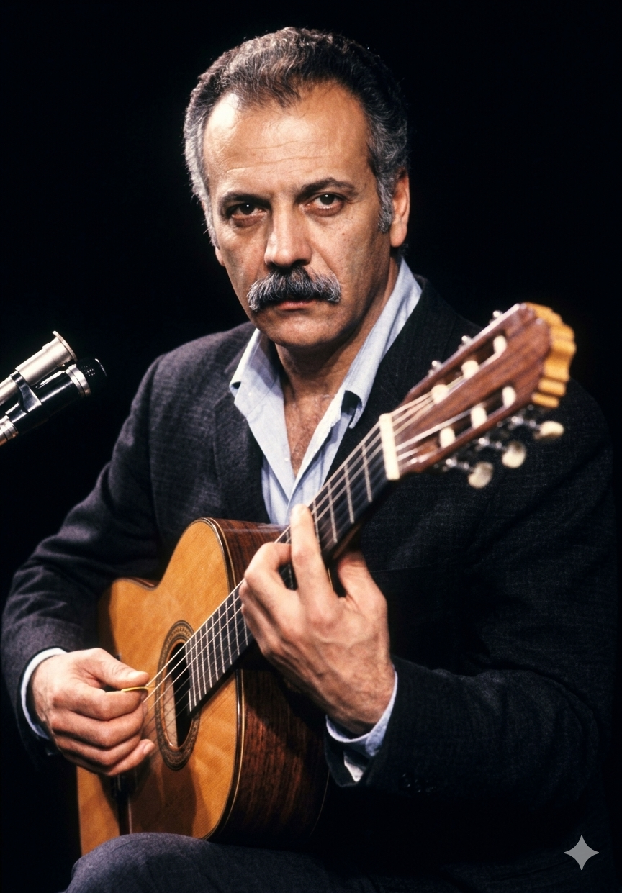

ז'ורז' ברסנס
Georges Brassens
אטימולוגיה ומקור השם המלא
שם פרטי: ז'ורז' (Georges)
מקור יווני (Georgios). מורכב מהמילים "ge" (אדמה) ו-"ergon" (עבודה). המשמעות היא "עובד אדמה" או "איכר". שם המשתלב היטב עם דימויו של ברסנס כאדם פשוט ואותנטי המחובר לאדמה ולעם.
שם אמצעי ראשון: שארל (Charles)
מקור גרמאני עתיק. משמעותו המילולית היא "אדם חופשי" או "גבר חופשי".
שם משפחה: ברסנס (Brassens)
שם משפחה המגיע מאזור אוקסיטניה (דרום צרפת), כנראה מבוסס על השורש המקומי "brasa" (גחלת/אש) או נגזר משם של ישוב או חווה קדומה. ברסנס שמר על שמו המקורי לאורך כל הקריירה, כהצהרה של נאמנות לשורשיו העממיים.
ילדות
נולד בעיר החוף סֵט (Sète) שבדרום צרפת. אביו היה קבלן בניין אתאיסט בעל אופי נוח, ואמו (ממוצא איטלקי) הייתה קתולית אדוקה ושמרנית. הבית היה תמיד מלא במוזיקה. בנעוריו היה תלמיד גרוע שסלד ממסגרות, ואף הסתבך בפרשת גניבות קטנות עם חבריו שהובילה לסילוקו מבית הספר. אירוע זה עיצב את השקפת עולמו המורדת כלפי הממסד. בעקבות כך, עזב ב-1940 את הבית ונסע לפריז לחיות אצל דודתו. במהלך מלחמת העולם השנייה נשלח על ידי הנאצים לעבודות כפייה בגרמניה (STO), משם נמלט בחופשתו הראשונה וירד למחתרת בפריז, שם החל לכתוב את שיריו הראשונים.
אידאולוגיה והישגים
אידאולוגיה (אנרכיזם אינדיבידואליסטי): ברסנס היה "טרובדור מודרני". האידאולוגיה שלו דגלה בחופש אישי מוחלט, בוז עמוק לצביעות הבורגנית, לממסד הדתי, למערכת המשפט והמשטרה, ולכל סמכות כופה. הוא התייחס לעצמו כאנרכיסט פציפיסט. שיריו היו לרוב סאטיריים, לעיתים שערורייתיים ובוטים, אך תמיד עטופים בחמלה כלפי האנשים הפשוטים ושולי החברה.
סגנון ייחודי ומינימליסטי: בניגוד להפקות הראוותניות של עמיתיו, ברסנס הופיע תמיד כשהוא מלווה את עצמו בגיטרה קלאסית בלבד (לפעמים עם נגן קונטרבס שני), ישוב על שרפרף, כשהטקסט המשובח תופס את מרכז הבמה. הלחנים שלו נראו פשוטים אך היו מורכבים וג'אזיים במבנה שלהם.
הישג ספרותי נדיר: למרות התדמית המרדנית שלו, הוא כתב בשפה צרפתית גבוהה ומדויקת להפליא. הוא היה אחד הזמרים היחידים שזכו (ב-1967) ב"פרס השירה הגדול" (Grand Prix de Poésie) מטעם האקדמיה הצרפתית – הוכחה לכך שהשירה המושרת נחשבת לספרות גבוהה לכל דבר ועניין בצרפת.